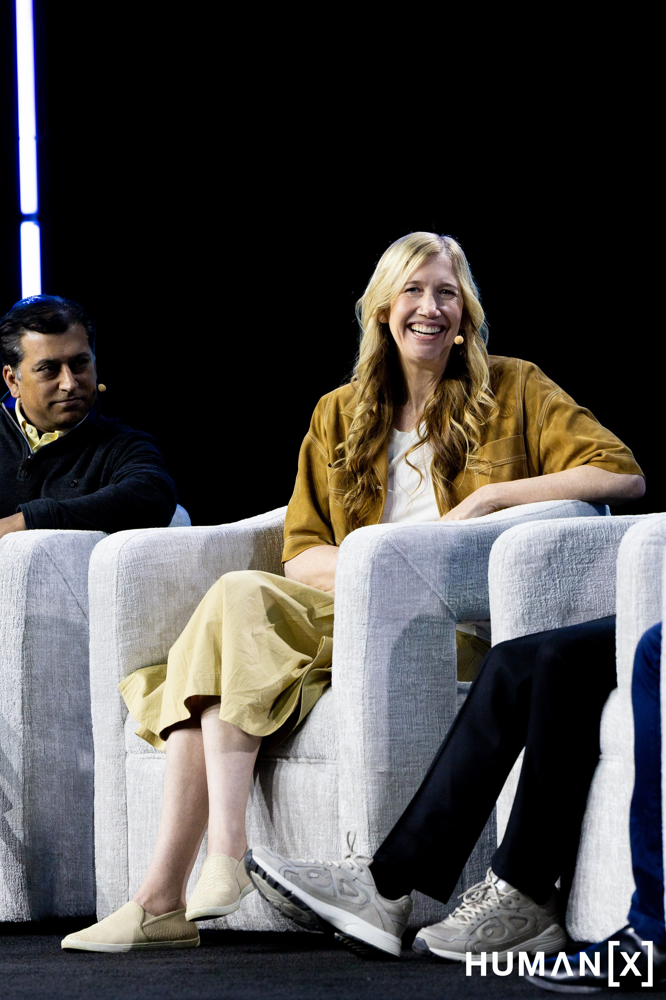

AI Is Learning to Do Things — Not Just Answer Questions
What Happened
Multiple sessions — from AWS CEO Matt Garman's keynote to panels featuring Microsoft, Intercom, and Superhuman — converged on the same message: AI is moving from copilotAn AI assistant that works alongside you — suggesting, drafting, summarizing — but waits for you to make every decision. The step before agents. to AI agentSoftware that doesn't just answer questions — it takes actions. It can book a flight, process a refund, or coordinate between systems without a human clicking every button.. A copilot suggests things for you to do. An agent actually does them.
The examples were concrete. Lufthansa shared how their AI system handles 400,000 customer conversations in a single day — rebooking flights, issuing refunds worth over 100 million euros, answering questions in six languages. Westshore Home described an AI system that schedules home renovation appointments on the spot by coordinating inventory, permits, crew availability, and customer preferences — all in real time, while the customer is still sitting at the kitchen table.
What This Means for You
The AI tools you've been hearing about — ChatGPT, Copilot, AI assistants — mostly help you write, summarize, and brainstorm. The next wave does actual work: scheduling, purchasing, processing orders, handling customer requests, coordinating across systems. If your team is still thinking of AI as "a better search engine" or "a writing assistant," you're looking at last year's landscape.
The shift matters because agentic AIThe broader shift from AI that advises to AI that acts. Instead of suggesting what to do, agentic AI goes and does it — within boundaries you set. doesn't just save time — it changes who does the work. Lufthansa's system doesn't assist a customer service agent. It is the first point of contact for thousands of people simultaneously. Westshore Home's scheduling AI doesn't help a scheduler — it replaces the scheduling step entirely. The question is no longer "how can AI help my team work faster?" It's "which parts of the work can AI handle on its own, and which parts still need a person?"
One Thing to Try
Pick one repetitive workflow in your team — one that involves checking multiple systems, copying information between tools, or coordinating with other departments. Ask: "Could an AI agent handle the routine 80% of this and flag only the exceptions for a human?" That's the shift happening right now.